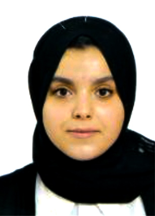

Page personnelle de yahia bey malak
Informations de contact
- Yahia bey malak
- Tipaza
- yahiabeymalak09@gmail.com
- 0656714848
Actuellement étudiante en première année master de spécialité E-business à l'école superieure de gestion et d'économie numérique à kolea, je suis à la recherche d’un stage de 2 mois dans le cadre de ma formation.

- Formation
- Compétences
- Centres d'intérets
- plus d'informations
- 2018-2021: Baccalauréat Scientifique, Lycée mohamed sadik ben yahia, Algérie (Batna)
- 2022: Formation de 1 mois en 21st Century skills
- 2024: Stage découverte de 15 jours à l'OPGI
- 2024-2025: Master 1, spécialité E-business à l'école superieure de gestion et d'économie numérique
Langues
- Arabe: langue maternelle
- Anglais: avancé
- Francais: avancé
Centres d'intérets
- Podcasts et écriture
- cuisine
- sport
Compétences
- Suite microsoft office: Excel, Word, Powerpoint
- Compétences en communication
- Gestion de temps, Planification, Priorisation des taches
Pour plus d'infromations cliquer ici